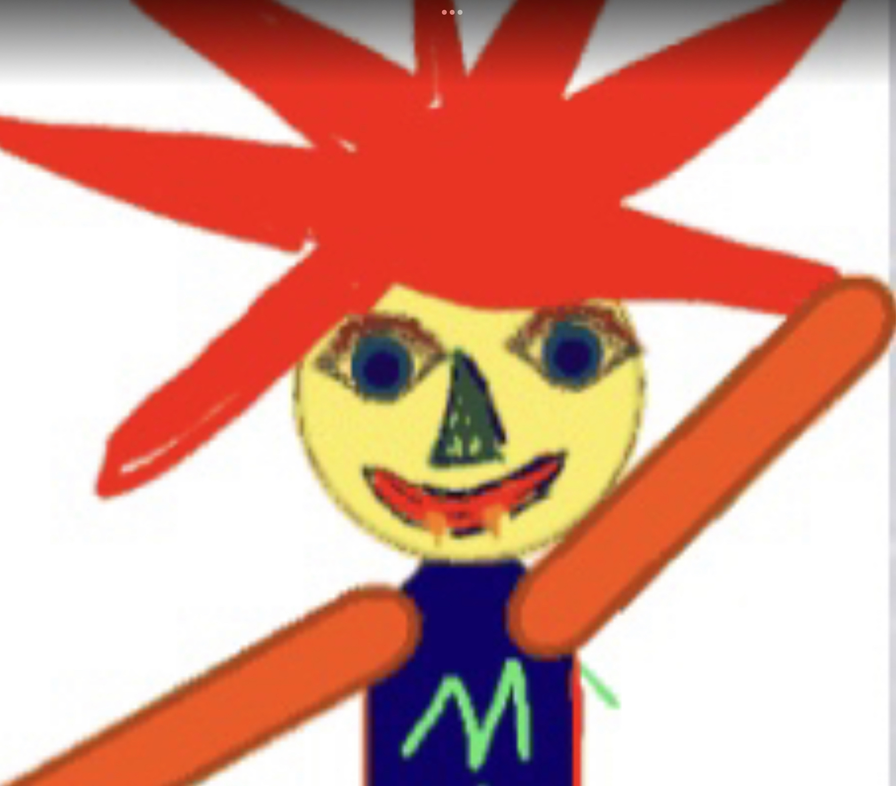

The MIK programming language was actually a meme that
has it's origin in a Powerpoint
presentation of my fellow
ComputerScience Teacher.
As the
meme gained some popularity
ideas of a operating system
sprung up. But a operating
system alone wasn't going to be
good enough so an executive
decision was made:
mikOS
should only be written in
asm and
the MIK programming language!
So I emediatly started
development on this heavilly
optimised programming language
that will get a normal everyday use version some day!